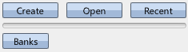
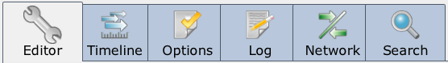
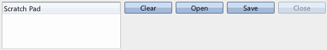
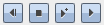

|
A First Look |
| Navigation |
Welcome to the New Miles! We're really happy with this release, focusing on the high level tool. It has been rewritten from the ground up to be more usable, scalable, functional, and fast. These User's Guides are targeted towards sound designers, or those wanting an introduction to the tool itself. For introduction to the coding side of things, please look at the Programmer's Introduction help file.
This is the first of a series of user's guides designed to introduce you to important concepts. They will be organized in consistent manner:
Requisite Terminology
None!
New Terminology
Steps

This loads a previously saved Sound Bank. Along the left of Miles Studio you will see the Assets in this sound bank.


This loads a previously saved Capture. The timeline now shows several events that were recorded and when they happened.

Right now you are hearing a replay of a timeline I put together using the same example sound bank, but on a completely different machine. You can see the events, when they occurred, and if you click on each instance, you can see many details about them. Feel free to click around and see what all you can inspect.
 Sound Designer User Guide Sound Designer User Guide |
 Playing A Sound Playing A Sound |

|
Miles Sound System 9.3b
E-mail miles3@radgametools.com for technical support. Copyright © 1991-2012 by RAD Game Tools, Inc. All Rights Reserved. |

|